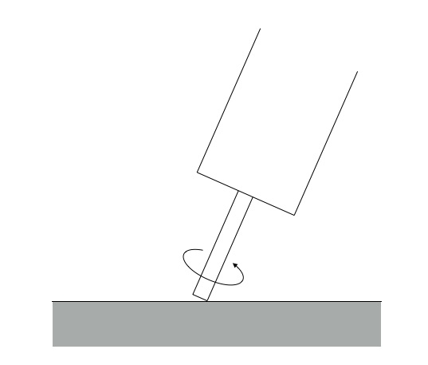
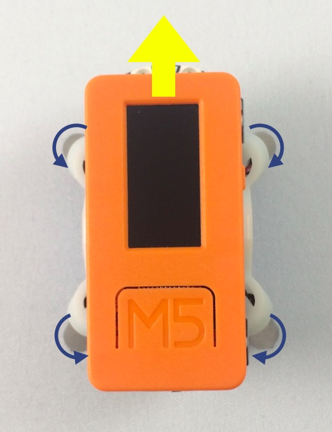
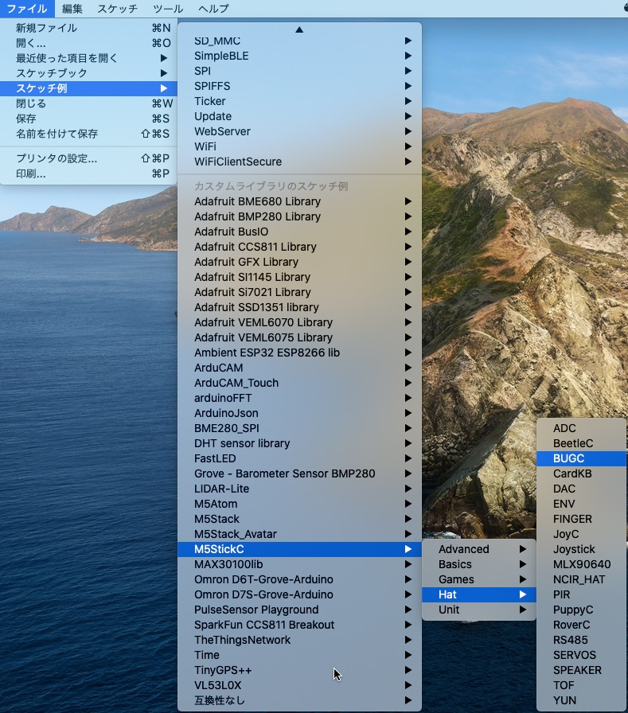
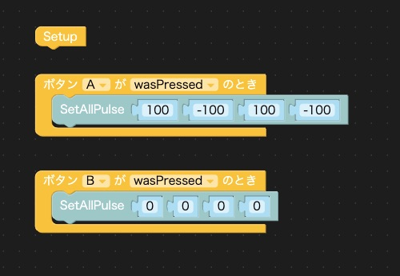
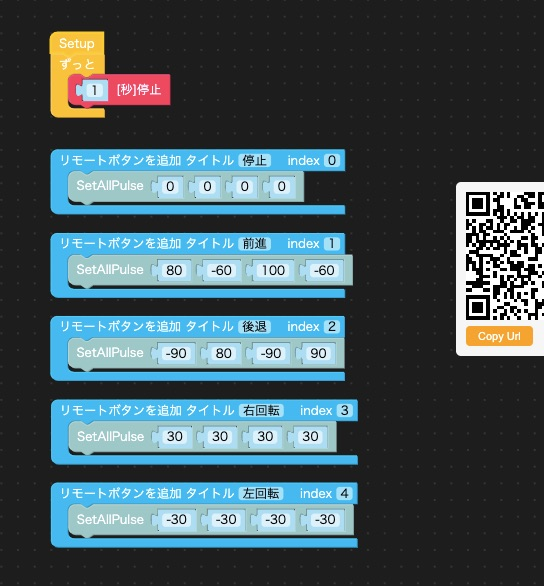
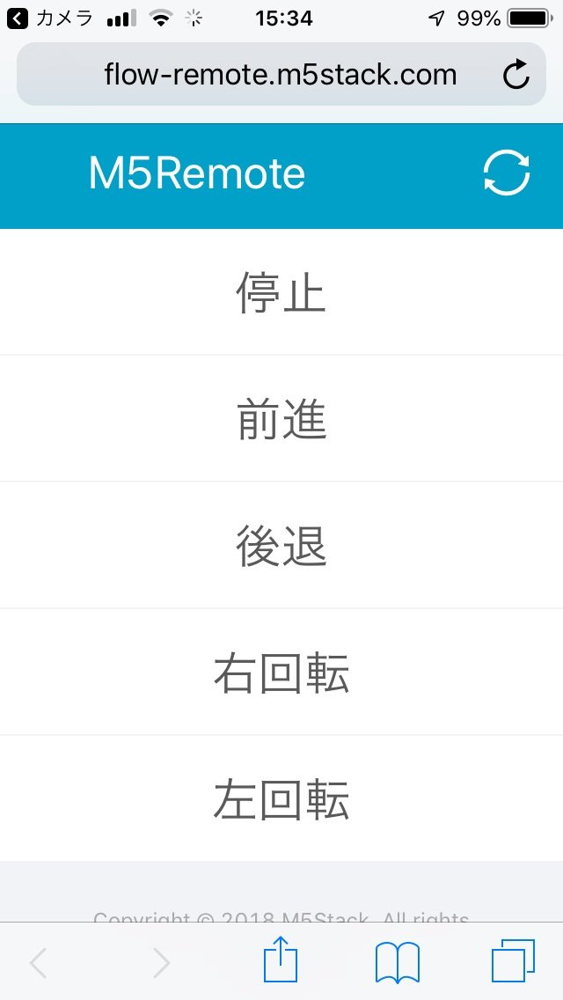
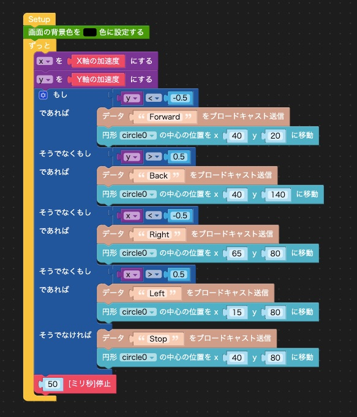
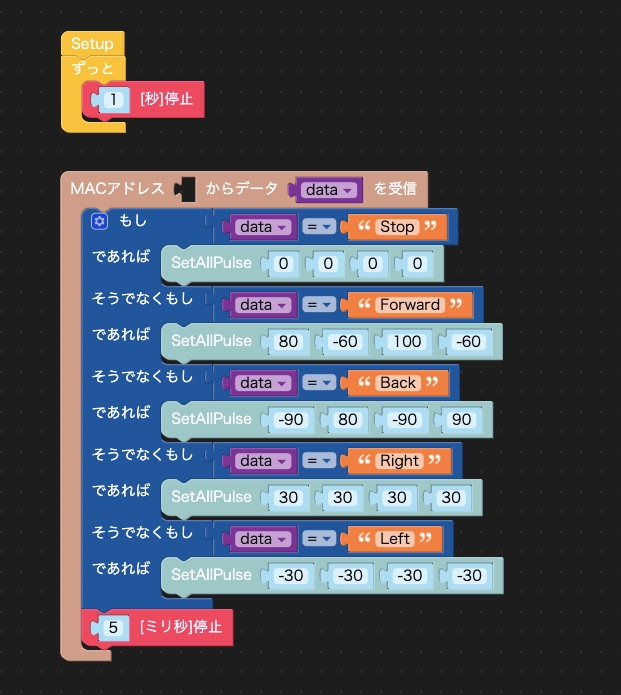

M5StackやM5StickCを使って、面白いことをするコーナー「M5Stackカフェ」。 第7回は小型ロボットBugCをもう1台のM5StickCでコントロールします。
BugCはM5StickCで制御する小型ロボットです。4本の足がついていて、前進・後退、その場で回転など、とても機敏に動きます。 このBugCをもう1台のM5StickCを使ってコントロールしてみました。
BugCが動く仕組みはとてもユニークです。 BugCには上の写真のように4つの小さなモーターが少し外側に向けてついていて、モーターの軸が床などの面に斜めに接しています。 モーターはM5StickCで制御して回転させますが、どちらにも回すことができます。 モーターを図のような向きに回転させたとき、この足は画面の手前から奥に向かって移動します。

4つのモーターを次の図のように回すことで、前進します。

BugCはM5StickCを接続し、I2Cで制御します。プログラムはArduino、UI Flow、どちらでも可能です。 サンプルプログラムが次のサイトに公開されています。
https://github.com/m5stack/M5-ProductExampleCodes/tree/master/Hat/BugC
またArduinoのサンプルプログラムはArduino IDEの「ファイル」メニューの「スケッチ例」→「M5StickC」→「Hat」→「BUGC」にもあります。 ライブラリマネージャでM5StickCライブラリの0.2.0以上をインストールするとスケッチ例に現れます。

Arduinoのサンプルプログラムは、M5StickCのAボタンを押すと後退し、Bボタンを押すと止まるという簡単なものです。 UI Flowのサンプルプログラムは2台のM5StickCを使い、1台でBugCを制御し、もう1台にジョイスティックをつけてコントローラーにして、BugCをリモート制御するものです。
Arduinoのサンプルプログラムを参考に、UI FlowでAボタンを押すと前進し、Bボタンを押すと止まるプログラムを作りました。

動かしてみると、BugCは左前の方にカーブして進んでしまいました。プログラムとしては4つのモーターを同じ速度で回転させていますが、重さのバランスなどで床に伝わる推進力が同じにならず、直進しないのだと思います。4つのモーターの速度をいろいろと調整しましたが、まっすぐに前進・後退させることはできませんでした。
その場での回転は、右回転も左回転もほぼ同じ場所でうまく回転しました。
まっすぐ進まないのはBugCの個性だと諦めて、BugCを別のデバイスでコントロールしてみます。UI Flowのメニューを見ると「リモコン」というブロックがあります。スマホの画面にボタンやスイッチなどを表示して、M5StickCやM5Stackを制御できるブロックです。これを使って、次のようなプログラムを作りました。

UI Flowのプログラムを作る画面の右側に薄くQRコードのアイコンが表示されていて、それをクリックするとQRコードが表示されます。このQRコードをスマホで読んでページを表示すると、次のようにプログラムで設定したボタンが並んだページが表示されます。

スマホの「前進」ボタンをタップすると、BugCが勢いよく動き出しました。「停止」ボタンを押しましたが、1秒ぐらい遅れて止まります。「リモート」はスマホとM5StickCがクラウドを経由して通信するので、1秒程度の遅延はしかたないのでしょうが、BugCはとても機敏に動くので、この反応の悪さはいただけません。
Githubに公開されているUI FlowのサンプルプログラムはBugCに接続したM5StickCをもう1台のM5StickCでコントロールしています。2台のM5StickCは「EspNow」という方法で通信しているので、これを試してみます。
サンプルプログラムではジョイスティックHatを使っているのですが、手元にジョイスティックHatがなかったので、その代わりにM5StickCを傾けて、傾きを加速度センサで検知してBugCをコントロールしました。
コントローラ側のプログラムは次のようになりました。

M5StickCを前後に傾けるとy軸の加速度値が-1.0から+1.0まで変化します。-0.5以下になったら「前進（Forward）」メッセージを、+0.5以上になったら「後退（Back）」メッセージを送ります。左右に傾けるとx軸の加速度値が変化するので、-0.5以下になったら「右回転（Right）」を、+0.5以上になったら「左回転（Left）」を送るようにしました。
BugC側のプログラムは次のようになりました。

EspNowで送られたメッセージに応じて、BugCを動かしています。
通信方法の詳細は省きますが、EspNowはWi-Fiパケットを直接使って非常に高速な通信ができ、このような小型ロボットの制御などには適しています。
M5StickCを傾けてBugCをコントロールしている様子は次の動画をご覧ください。
話が長くなってきたので、今回はこのくらいにします。
動くものには個性を感じますし、しばらく付き合っていると愛着も湧きます。しかしまっすぐ進んでくれないなぁ。